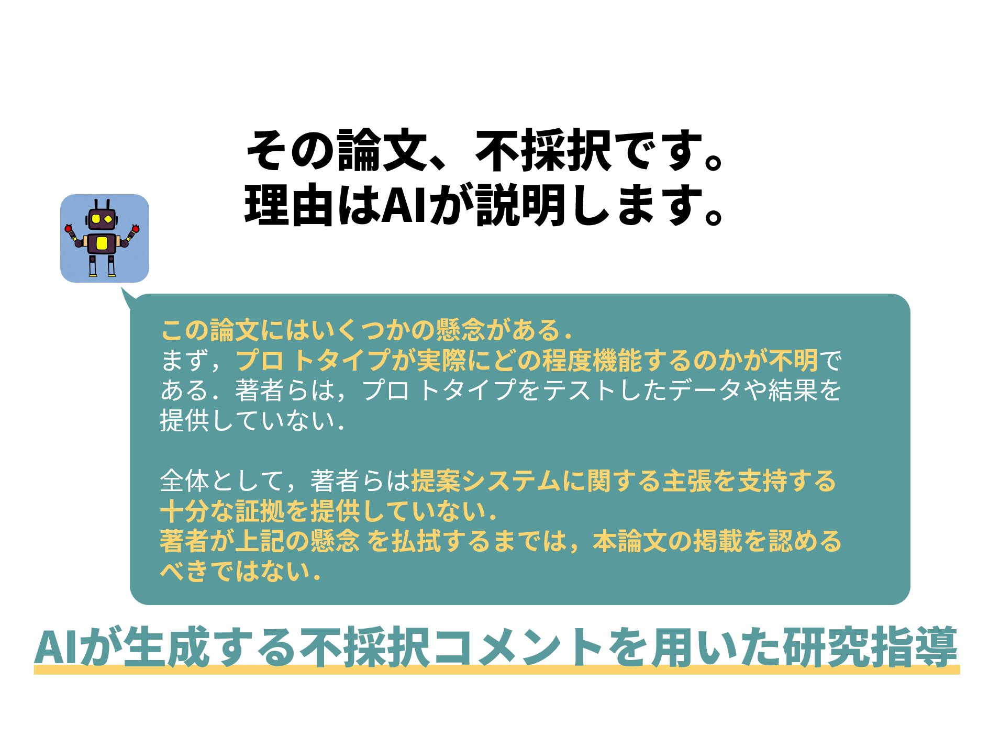

概要
本稿では，AI の文章生成言語モデルによって論文の概要から「不採択コメント」を生成し，それに学生と教員が一緒に向き合うことによる研究指導を提案する．実装したシステムは Slack Bot であり，文末に「なーんてな」といった言葉を追加することによって表現の威圧感を緩和して，実際に学生が読んだときの精神的なダメージを低減する．動作テストでは，10 の不採択コメントで役に立っ たと思える点があるものは７つで，中には新しいアイデアまで提供するものがあった．これを実際に 当研究室での研究指導に活用する計画である．
論文（PDF）
https://www.wiss.org/WISS2022Proceedings/data/T09.pdf
発表
WISS 2022:第30回インタラクティブシステムとソフトウェアに関するワークショップ研究室DB（書誌情報など）
https://www.miyashita.com/researches/2UPIIrRYNp2v1q9dF0TGju実装
python3.8でSlack Botを作成
※GPT-3のパラメータは論文からご確認いただけます
動作例
※使用しているテキストは論文執筆時点での草案です
コメント
学会初参加の学部生のテーマらしくないなと思います。（可愛げがない）